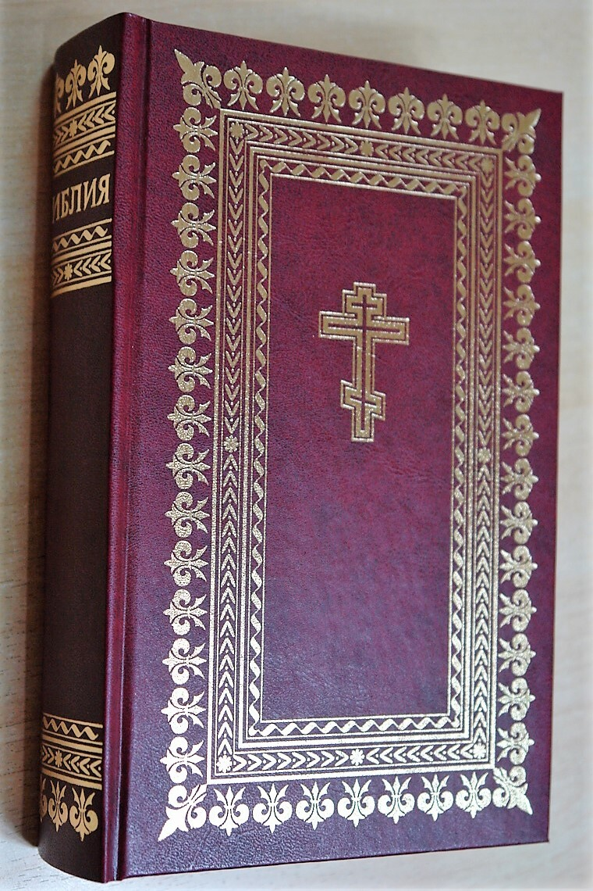

Paroisse Orthodoxe Sainte Clotilde
Voici les différentes vidéos sur la Sainte Bible :
- Introduction à la Bible :
l'Ancien Testament
La préservation et la transmission de la Bible
Fin
- Genèse :
Genèse 1-1 : la théologie de la création
Genèse : Jour 1, suite et fin
Genèse : second jour de la création
Genèse : troisième jour de la création
Genèse : quatrième jour de la Création
Genèse : création des animaux
Genèse : le premier récit de la création de l'homme
